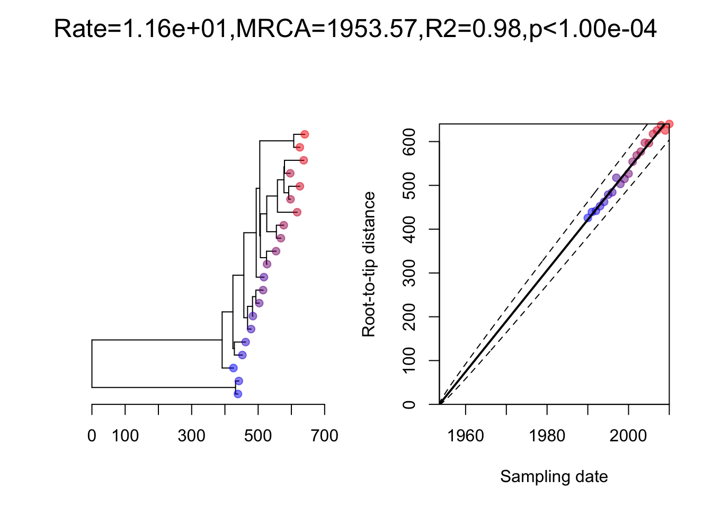

Chapter 8 Rooting trees
While an unrooted tree shows relationships between samples, it does not indicate the directionality of evolutionary change. There are several methods of rooting trees.
8.1 Outgroup
Include a sample that is more evolutionarily divergent from the rest of the samples- e.g. if you are focusing on one sub-species, include an out-group that belongs to the same species, but different sub-species.
8.2 Midpoint
Midpoint rooting places the root half-way between the longest tips. This can be performed using the ape and phytools packages in R.
8.3 Molecular clock
This method finds the root most consistent with the sampling dates of the sequences. This is the method used by BEAST and BEAST2. However here we demonstrate two quicker methods of generating a time-scaled phylogeny.
8.3.1 TreeTime
Treetime is a command line tool that can also be used to estimate a time-scaled phylogeny. In this case you will need your tree, your alignment, and your metadata in csv format.
8.3.2 BactDating
The R package BactDating can also reroot a tree.
You will need a data frame containing the dates. You can use the lubridate package to convert dates in YYYY-MM-DD format to decimal dates.
##
## Attaching package: 'lubridate'## The following objects are masked from 'package:GenomicRanges':
##
## intersect, setdiff, union## The following object is masked from 'package:GenomeInfoDb':
##
## intersect## The following objects are masked from 'package:IRanges':
##
## %within%, intersect, setdiff, union## The following objects are masked from 'package:S4Vectors':
##
## intersect, second, second<-, setdiff, union## The following objects are masked from 'package:BiocGenerics':
##
## intersect, setdiff, union## The following objects are masked from 'package:base':
##
## date, intersect, setdiff, union| ID | date | decimaldate | Group1 | Group2 |
|---|---|---|---|---|
| sample_1 | 1990-01-01 | 1990 | C | F |
| sample_2 | 1991-01-01 | 1991 | C | F |
| sample_3 | 1992-01-01 | 1992 | B | D |
| sample_4 | 1993-01-01 | 1993 | C | E |
| sample_5 | 1994-01-01 | 1994 | B | D |
| sample_6 | 1995-01-01 | 1995 | B | D |
## sample_1 sample_2 sample_3 sample_4 sample_5 sample_6 sample_7 sample_8 sample_9 sample_10
## 1990 1991 1992 1993 1994 1995 1996 1997 1998 1999
## sample_11 sample_12 sample_13 sample_14 sample_15 sample_16 sample_17 sample_18 sample_19 sample_20
## 2000 2001 2002 2003 2004 2005 2006 2007 2008 2009
## sample_21
## 2010
## $rate
## date
## 11.57516
##
## $ori
## (Intercept)
## 1953.572
##
## $pvalue
## [1] 0